|
|
THE FOLLOWING LOCATIONS HAVE BEEN FOUND
PAGE 0000
DANGER MAN: The Man on the Beach (Peter Yates: 1965)
Sydney, Austallia
- Establishing shots of Jamaica
(Idenified by Piers Johnson).
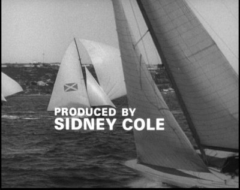

DANGER MAN: The Man Who Wouldn’t Talk (Michael Truman: 1965)
Maida Avenue and passing the junction with Park
Place Villas – Drake engineers the escape of Meredith from Drake’s
hotel in an ambulance. Drake follows the ambulance in a police car as they
drive along a canal.
(Identified by Geoff Dodd, October 10th 2013)

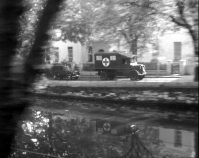
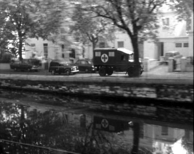
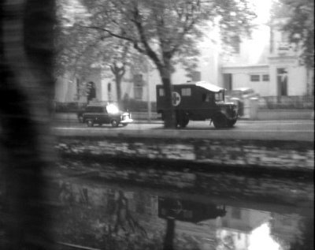
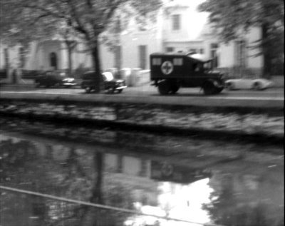
Randolph Road turning right
into Randolph Mews – Drake engineers the escape of Meredith from
Drake’s hotel in an ambulance. Drake follows the ambulance in a police car and
picks Meredith up when he overpowers the ambulance man.
(Identified by Geoff Dodd, October 10th 2013)

DANGER MAN: Dangerous Secret (Stuart Burge: 1965)
Burma Road Chobham Common
– Drake follows M. Barbier from his antiques shop using a tracking device.
(Identified by Gordon Thompson, 8th October 2012)
Also from Gordon: ‘Staple Hill, Chobham Common was also used in DANGER MAN: To Our Best Friend and THE SENTIMENTAL AGENT: Express Delivery and Finishing School.
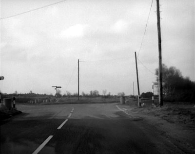
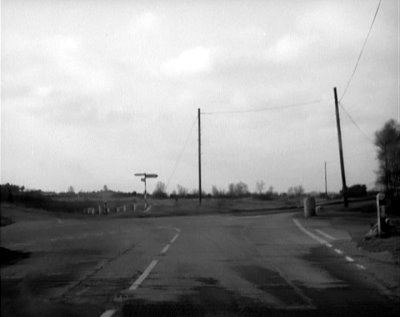
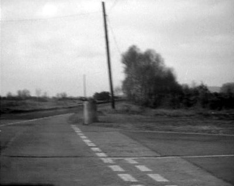

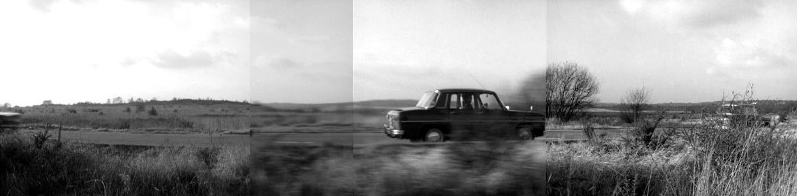
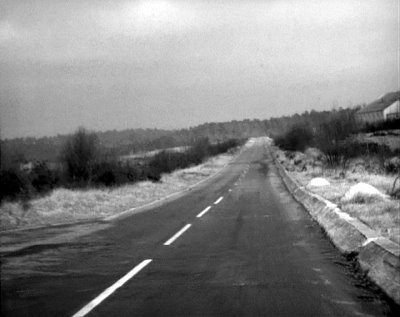
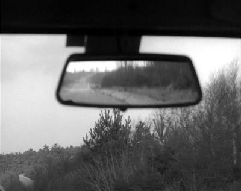
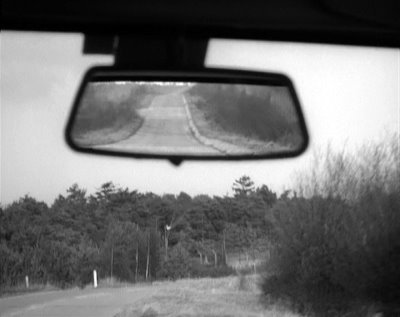
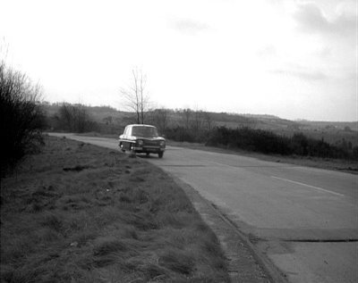
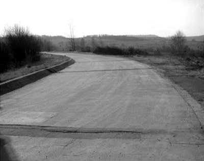
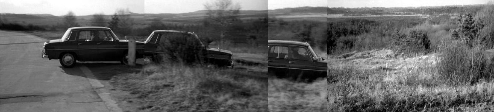
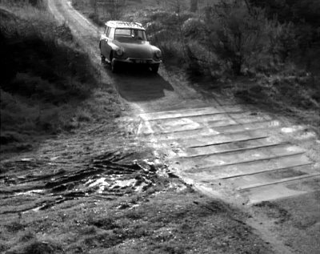
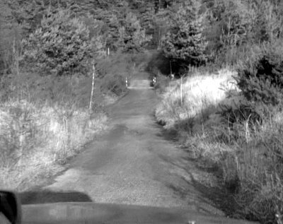
DANGERMAN: The Affair At Castelevara (Quentin Lawrence: 1964)
Bussaco Palace Hotel, Estrada Florestal,
Mealhada, Portugal – The magnificent home of Colonel Montez.
(Idenitfied by Paul Stroud, May 2014)
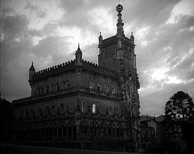
DANGERMAN: Such Men Are Dangerous (Don Chaffey: 1964)
Frensham Common, Surrey - Drake steals
a Land Rover and is pursued by his former comrades.
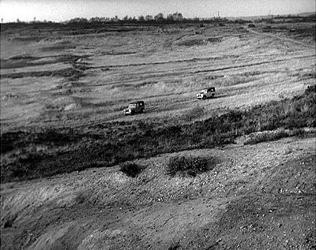

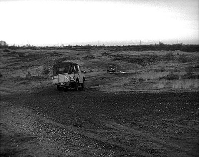
DANGER MAN: You’re Not In Any Trouble, Are you? (Don Chaffey: February 1965)
Via Vittorio Veneto, Rome - John Drake
goes to the Michelangelo Hotel in Rome to investigate the death of Bill Ellis.
(Identified by paul Stroud, June 2014)

Excelsior Hotel, Via Vittorio Veneto as seen
from Via Ludovisin – John Drake places a personal add in ‘Il Globo’ and the
following day a copy is read at a local news stand.
(Identified by paul Stroud, June 2014)

Albert Memorial Clock Tower, Victoria
Street/Queen's Square, Belfast – John Drake looks out from his hotel
room to check the time by a nearby clock tower.
(Identified by paul Stroud, June 2014)

THE AVENGERS:
Death's Door (Sidney Hayers: June 1967)
M23: Hilfield Lane - Melford gets a
fright when a cyclist suddenly turns in front of his car as he and Steed drive
to the conference.
(Iidentified by Geoff Dodd, April 2013)
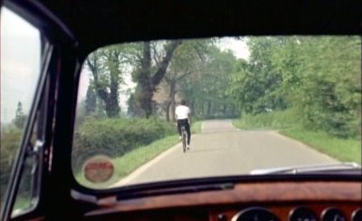

THE AVENGERS: The See-Through Man
(Robert Asher: November 1966)
C27: Lilley, Luton - Mrs Peel drives off in her
Lotus after her encounter with Eleneand Ackroyd
but she is pursued by Vazin’s
Jaguar (along Hexton Road). The Jaguar slides on a corner and comes to a stop.
Mrs Peel sees that the driver of the car has no head before he drives away.
(Identified by Jon Mayers, April 2014)
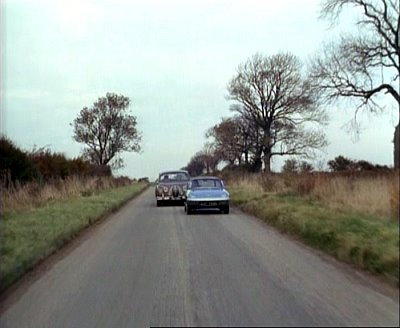
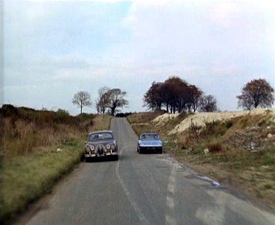
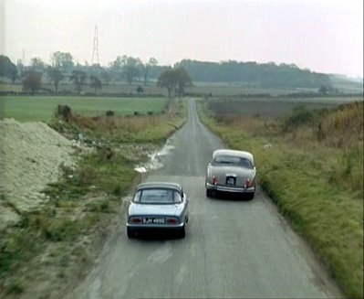
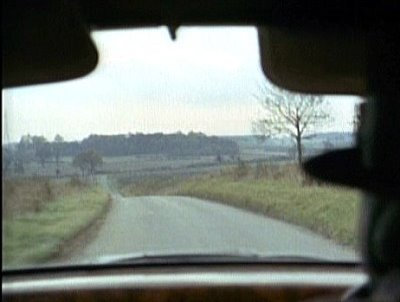
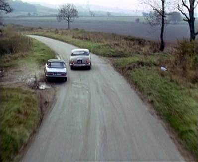
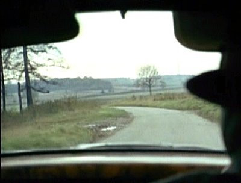
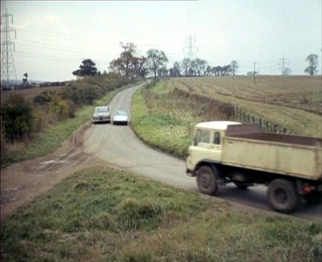
DANGER MAN: The Trap (R. Pennington Richards: 1959)
Cavendish Square/Cavendish Place/Chandos Street
- John Drake travels by taxi to the apartment Liz Parish shares with Parish
with Elizabeth Warren.
(Identified by Alan Field, September 2011)
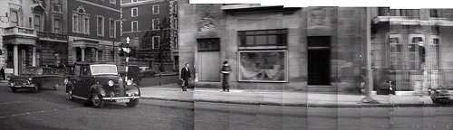
THE PRISONER: Do Not Forsake Me Oh My Darling (Pat Jackson: August 1967)
Boulevarde de la Corne d'Or (D6007), Villfrance-sur-Mer: Number 6 keeps on going.
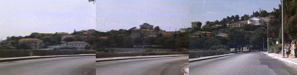
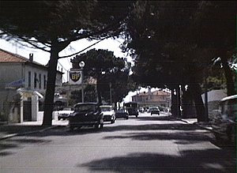
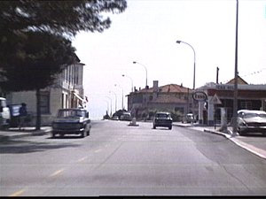
 Boulevarde
de la Corne
d'Or (D6007) Starting west of Avenue RaquellMeller and ending at the Cornich Andre de Joly.
Boulevarde
de la Corne
d'Or (D6007) Starting west of Avenue RaquellMeller and ending at the Cornich Andre de Joly.
 From WB
catalogue “309028 - F.F. Eye line from Very Fast Car Along Corniche entering Small Town.”
From WB
catalogue “309028 - F.F. Eye line from Very Fast Car Along Corniche entering Small Town.”
Silvretta
Hochalpenstraße, Vorarlberg, Austria: Potter drives up a steep
mountain pass following the radio signal leading to Number 6.
(Identified by Daniel Bauer, March 6th, 2013)
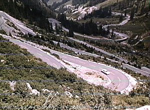
J16: A1081, London Colney
by-pass: Number 6 is being followed from London to Dover by Potter
in his car. Potter radios in to confirm Number 6's destination (back projection
seen from Potter's car).
(Identified with the Help of Alan Field, October 2010)

THE PRISONER: Many Happy Returns (Patrick McGoohan: March 1967)
Elsree Way, Borehamwood: The civil servant (Patrick McGoohan) continues his journey in the Lotus (buildings in backround demolished and council offices built on the site).
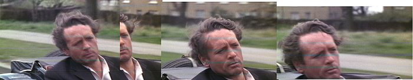

THE AVENGERS: All Done with Mirrors
(Ray Austin: May 1968)
N35: Tykes Water Lake, Bridge and approach road,
Aldenham Park, Elstree - Roger (John Bown), one of Mothers' men in an
MGB tails Arkin (Peter Elliott) driving a MG 110 to a secluded wood south of
The Establishment. He reports to Mother by radio. Arkin appers to be talking to
someone, but he is unable to see anyone in the immediate area. Later Watney
(Dinsdale Landen) follows Doctor Dr Seligman (Anthony Dutton) to the same
location. After Seligman is shot Major Sparshott (Peter Copley) appears nearby.
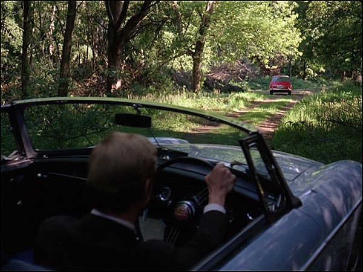 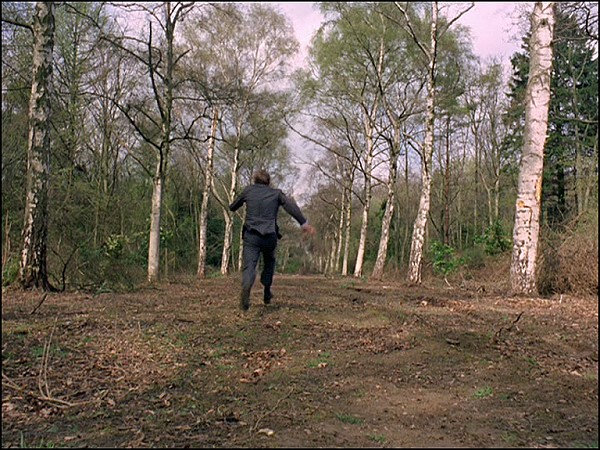
Mont-Chauve on the way to Fort du Mont-Chauve
d'Aspremont, Nice:While Danny drives the Citroen with Sidonie and
Frank Rocco aboard through Italy to their meeting place Sidonie takes photos of
Danny.
Identified by Pierre Alfonsi, 27th June, 2012

D22 overlooking the village La Peille - The roadside building has been renovated and incorporated into a larger structure.


Route de Grenoble by Manda, Colomars, France
- After Brett steals a police car - Danny drives the Citroen with Sidonie
(Joan Collins) and Frank Rocco (Robert Hutton) aboard through Italy
to their meeting place (724 Route de Grenoble).
(Idenfified by Pierre Beaumont, November 2011)

Mont Chauve:

Bridge crossing the River Esteron on the D2209
between the Communes le Broc and Gilette, Alpes- Maritimes, France -
Danny (Tony Curtis) drives the Citroen with Sidonie (Joan Collins) and
Frank Rocco (Robert Hutton) aboard along a riverside country road and
under a bridge to wait for Brett to join them. Brett (Roger Moore)
arrives in a police car and gives everyone a fright. Later the police find the
abandoned cars and assume that Rocco and his friends are now on foot.
(Idenfified by Pierre Beaumont, November 2011)


D22 overlooking the village La Peille: Location for most of the sequences featuring the main cast once the villains have caught up with them. More details soon.


Woolmers Park and High Cannons - Thanks to Paul Stroud.


THE PERSUADERS!:To the Death, Baby (Basil Dearden: June/July 1970)
Alderbourne Manor, Fulmer Lane, Fulmer, Buckinghamshire - After Coady (Harold
Innocent) and his men arrive at Carl Foster's (Terence Morgan) villa
Foster makes a run for it past Coady's men and escapes in an MG. All this is
witnessed by John Hatton.
(Identified by Steve Cook, January 22nd 2012)

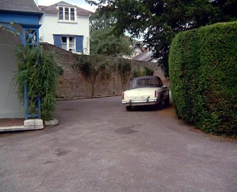
THE PERSUADERS!: The Morning After (Leslie
Norman: 1971)
Stockholm Arlanda Airport: Danny sees Bret and his new wife to the
plane as they fly out of Stockholm.
(Identified by Jaz Wiseman, September 2010)
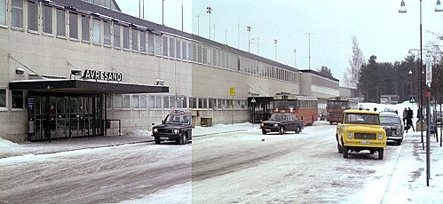
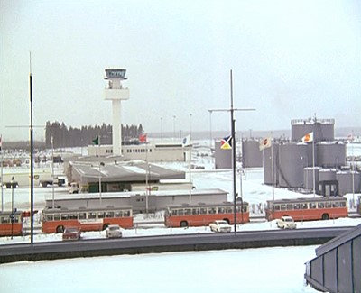
DEPARTMENT S: The Man Who Got a New Face (Cyril
Frankel 1968)
Hotel Du Cap-Eden-Roc, Boulevard JF
Kennedy, Antebes, France: Sullivan telephones Jason at the hotel
where he is watching Monique Grelle.

THE
PERSUADERS!: Someone Waiting (Peter Medak: 1971)
Oxford Road / Vansittart Road, Windsor, Bucks
Danny, Brett and Dwyer drive past the Mitre pub towing the ‘Sinclair Special’
as they return from the motor racing circuit.
Jaz Wiseman July 2006
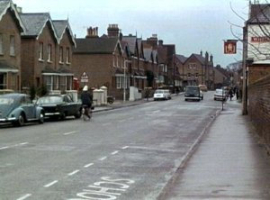
Lower Thames Street – Catharine follows (The Tower of London).
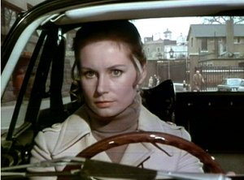
Albert
Street /
Danny, Brett and Dwyer turn
into
Jaz Wiseman July 2006
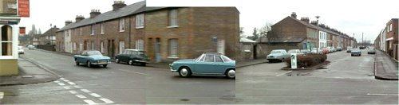
Lower Thames Street– Catharine continues to follow (Billingsgate Market).
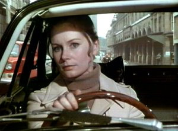
THE AVENGERS: Murdersville(Robert Asher: August 1967)
Ridge Hill Farm and surrounding countryside,
Shenley - Hubert (John Ronane) and Mickle (Colin Blakely) pursue Mrs Peel (Dianna Rigg) in their
helicopter and eventually run her to ground.
(Identified by Michael Richardson, June 2012)
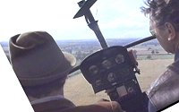
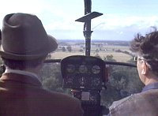
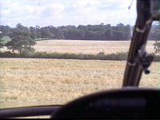
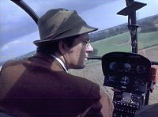
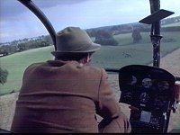
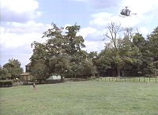
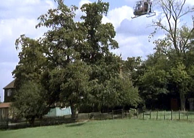
THE AVENGERS: Homicide and Old Lace (John Hough: January 1969)
Bullens packing company Maxwell Road, Borehamwood
THE AVENGERS: The Morning After
The junction of Burnham Road with Harlesden Road,
Saint Albans
(Idenified by Collin Wilson, July 2011)

THE AVENGERS: Epic (James Hill: February 1967)
Cowley Hill, Borehamwood: Route for this sequence is: Shenley
Road, near to the ABC Studios entrance (starting where council offices now
stand) then along Shenley Road to Cowley Hill (past the Hertswood School seen
in this shot).

Cowley Hill, road crossing for the school:
Cowley Hill/Gateshead Road:
(Identified Geoff Dodd, 16th May, 2011)

THE AVENGERS: Mission ... Highly Improbable (Robert Day: August 1967)
J17:
Bell Lane Sand Pit, London Colney (restored to fields and partly covered by M25)
- Colonel Drew (Richard Leech), Shaffer (Ronald Radd), Susan Rushton (Jane Merrow)
and John Steed (Patrick Macnee)
are all present to watch the demonstration on the MK39 armoured car.
(Identified by Alan Field, March 2011)


DEPARTMENT S: The Man in the Elegant Room
Hedley Road, Saint Albans, Hertfordshire : An
estate agent takes his client to see a warehouse property in Islington (they
actually start off in Islington’s
(Identified by Andy Lawrence, July 2011)
...open the gate and drive in.
THE HUMAN JUNGLE: Struggle for a Mind (Sidney Hayers: Feb/Mar 1964)
Charring Cross Underground Station, London - Establishing shot of the entrance to the tube.

Radlett Road and Ebury Road in Watford, the houses being on Ottoman Terrace – Suburban Street - Dr Jimmy Davis (Michael Johnson) arrives at the Kross family home, where he is admitted. Upon leaving, Davis returns to his car, where he is joined briefly by Mrs Kross (Kay Walsh). Later, Dr Roger Corder (Herbert Lom) and Liz (Joan Collins) arrive in his Humber Super Snipe and leaving the vehicle she walks across the road to some terraced houses, where she is met by Mrs Kross (Kay Walsh) and Angie (Margaret Whiting). Corder then drives the Humber away towards a tunnel. After being deceived, Liz (Joan Collins) runs down some steps and along the pavement, before walking alongside a brick wall. Looking for her daughter, Mrs Kross (Kay Walsh) also runs down the steps and then walks up a rise towards her home, where she finds Corder’s parked car.


 All this
footage is done around two parallel roads with some terraced houses on one side
and bridge in the background on one side and a tunnel on the other. The layout
suggests to me that there is a railway station close by.
All this
footage is done around two parallel roads with some terraced houses on one side
and bridge in the background on one side and a tunnel on the other. The layout
suggests to me that there is a railway station close by.
Corner of Ebury Road and Shaftsbury Road, Watford – Having failed to locate Liz, Dr Roger Corder (Herbert Lom) parks his Humber Super Snipe and walks across the road to a telephone box, where he calls Dr Tate to give him the news.

THE HUMAN JUNGLE: Solo Performance (Roy Baker. ???)
The Playhouse Theatre, Northumberland Avenue
– Shot of the theatre where the play is to take place, to establish the
location where Dr Corder
R.M.D., D.P.M, goes to speak with the director Paul Stockill.
(Identified by Alan Field, March 2011)
THE HUMAN JUNGLE: Enemy Outside (Roy Baker ???)
Thames,
just to the east of the King Edward Memorial Park in E1 –
While working at the docks as a crane driver Jeff Broadley suddenly has a panic attack
brought on by looking at the sun and leaving the controls unmanned, he causes
some barrels to be dropped on the quayside in a dangerous manner. Scrambling to
leave his crane, he goes outside and begins climbing down a ladder, but partway
down he loses his grip and falls to the concrete below where he breaks a leg.
(Identified by Alan Field, March 2011)
THE HUMAN JUNGLE: Skeleton in the Cupboard (Roy Baker. ???)
Herbert Mansions, at the juction of Sloan Street and Hans Crescent SW3
– Jenifer Corder
(Sally Smith) is shopping in town when a dog in a pet shop window catches her
eye,
 Intercut
with shots taken on the corner of Sloan Street and Wilbraham Place (wrong!!!!).
Intercut
with shots taken on the corner of Sloan Street and Wilbraham Place (wrong!!!!).
THE HUMAN JUNGLE: The Man Who Fell Apart
(Roy Baker ???)
Belgrave Square– A cab pulls up outside an apartment block at night
to establish the Grant’s home. A second establishing shot appears later that
night and this footage is used again for the following night.
THE SAINT: The Effete Angler (Anthony Bushell: 1962)
Juan-les-Pins -Miami Beach, Florida
THE BARON: There's Someone Close Behind You (Roy Baker: December 1965)
St Charles' Hospital, Exmoor Street, W10 - Cerdan (John Abineri)
walks out of his hospital ward (Saint Charles' Hospital) and steals the
car of a young man who is busy talking to a two nurses. The man notices too
late and Cerdan
drives out of the hospital gates.
(Identified by Geoff Dodd, April 2010)

THE BARON: Red Horse, Red Rider (John
Moxey:
July/August 1965)
Frensham Common, Surrey - The Baron
travels to Khakania
and drives to the house of Olmira
with his granddaughter,
Frensham Common, Surrey - Dressed
as farmers The Baron and

RETURN OF THE SAINT: One Black September (Leslie Norman: 1977)
Pindock Mews, Maida Vale, W9 - Simon
Templar (Ian Ogilvy) chases Masroof
(Stephen Grief) to the road at the back of the building.
(Identified by Greg Mishevski, aka SainTon the Britmovie Forum, December 13th, 2010)

JOURNEY TO THE UNKNOWN: Poor Butterfly (Alan Gibson: Alan Gibson: October
1968)
Redcliffe Mews, South Kensington, SW10
– Commercial artist, Steven Miller (ChadEverett) has received an invitation to attend a
weekend party in the country and sets off from his mews flat in his 1929 Bugatti.
(Identified by Greg Mishevski, aka SainTon the Britmovie Forum, December 10th, 2010)
Redcliffe Mews, South Kensington on to
Harcourt Terrace, SW10 – Commercial artist, Steven Miller (ChadEverett) has
received an invitation to attend a weekend party in the country and sets off
out of the mews where his flat is situated his1929 Bugatti.
(Identified by Greg Mishevski, aka SainTon the Britmovie Forum, December 10th, 2010)

THE SAINT: The Master Plan (Leslie Norman: 1967)
Embassy Lodge, Regents Park Road, London N3
– The Saint delivers
Victoria maternity hospital in Wood street,
Barnet – Cord Thandel
arrives at Welbeck Hospital intent on killing
Identified by 'Mark O' of the Britmovie Forum, January 2011
Charring Cross Road –After meeting
Mr. Ching at Heathrow Airport, Cord Thrandel drives him through London to his
office.
Identified by 'Mark O' of the Britmovie Forum, January 2011
THE SAINT: The Invisible Millionaire (Jeremy Summers: Autumn 1962)
Penton Hook Lock - Nora Prescott walks
past a Thames lock as she makes her way from the pub to a boathouse to meet
Simon Templar.
(Identified by Alan Field, September 2011)


Lower Sunbury - Nora Prescott walks
to a boathouse to await Simon Templar’s visitation. Unfortunately, she is followed
by a mysterious figure with evil intent (boathouse is still there opposite
Sunbury Lock).
(Identified by Alan Field, September 2011)

Corner of Hanover Square and Tenterden Street
- Simon Templar drives to
(Identified by Alan Field, September 2011)
DEPARTMENT S: The Bones of Byrom Blain (Paul Dickson: April 1969)
Paris Gare du l'est - Stewart Sullivan is waiting at Paris Gare du Norde for the train with Sir Curtis aboard.

DEPARTMENT S: The Mysterious Man in the Flying Machine (Cyril
Frankel: Spring 1969)
Rue Dejean, Paris
- Jason and Stewart got to the Bar Rapp, Rue St. Dominique as requested.
(Identified by Paul Stroud, June 2010)
St.
Tropez harbour - The Department team set up headquarters in a
harbour hotel.
(Identified by Paul Stroud, June 2010)
St.
Paul de Vence - Gerrard drives up to the villa of Lucky Le Beau.
(Identified by Paul Stroud, June 2010)

THE NEW AVENGERS: The Lion and the Unicorn (Ray Austin: 1977)
Boulevard Rochechouart, Paris– Gambit
chases Grimer's
van in a rubbish wagon and in the process travells this road…

Across the junction of Rue Simart/Rue Eugène Sue along Rue Eugène Sue then down Rue Marcadet, Paris Unknown – and this junction.
THE NEW AVENGERS: The Midas Touch
St Ann's Road, W11 - Gambit and
the assassin continue the chase...
(Identified by Stephen Carter)
 Henry
Dickens Court Estate, St Ann's Road W11. - Stephen Carter
Henry
Dickens Court Estate, St Ann's Road W11. - Stephen Carter
 Alan Field -
The camera was set up in Latimer Road between Hunt Street and Stebbing Street,
looking out across St Ann’s Road. The phone box was on a traffic island along
with an underground public lavatory, both are seen in the chase sequence at the
start of Robbery. The entire foreground is now part of Rifle Place.
Alan Field -
The camera was set up in Latimer Road between Hunt Street and Stebbing Street,
looking out across St Ann’s Road. The phone box was on a traffic island along
with an underground public lavatory, both are seen in the chase sequence at the
start of Robbery. The entire foreground is now part of Rifle Place.
This is basically where two long staight roads, St Anne's Raod and Latimer Road, used to meet at an acute angle with a ísland in between (where the telephone box is). The flats are on St Ann's Road W11 - but Latimer Road and the island are now covered by Rifle Place.
THE NEW AVENGERS: Sleeper (Graeme
Clifford: September 1976)
Beckton Gas Works, E6 - The coach carrying the villains arrives
after touring London.
(Identified by Alan Field, March 2010)
The gas works was used for quite a few productions in the 70s and 80s but two that show the jetty are the film BRANNIGAN (the climax of the film centres around it) and one episode of the TV series DANGER UXB. Although the gas works and jetty are long gone the support piers in the river are still there
Aldensley Road, W6 - Directly after the establishing shot of Kensington Olympia station, Steed’s car is seen making a left turn. This is Aldensley Road W6 turning into Brackenbury Road.The shops on the right in Brackenbury Road appear in two episodes of THE SWEENEYand at least one of MINDER.
DANGER MAN: The Paper Chase (Sidney Cole: 1966)
Bulkeley House, Middle Hill, Englefield Green,
Surrey- Eddie Geld sends John Drake (Patrick McGoohan) to a safe house run by Madame
Nandina. He is
met at the door by Canesi
(Sandor
Ellis). Later Drake follows Laprade
(Ferdy Mayne) from the
house.
(Identified by Greg Mishevski,
December, 2010)
‘
THE SAINT: The High Fence (James Hill: December 1963)
Old Bond Street, W1
- The Saint drives through London at night in his Volvo on his way to Gabriel
Forest’s home (Old Bond Street W1 passing Stafford Street).
(Identified by Alan Field, March 2010)
The Midland Bank is now Gucci and Jay’s is Rene Caovilla.

Holborn
Viaduct, EC1 - Simon Templar drives Gabriel Forest to the KoseyKorner Café in
his Volvo.
(Identified by Alan Field, March 2010)
DEPARTMENT S: The Trojan Tanker (Ray Austin: June1968)
Unknown 4: Jason watches the beach from his hotel room as Stewart
gets to know Veronica Bray better.
DEPARTMENT S: A Cellar Full of Silence (John Gilling: June 1968)
City Road, EC2:
Landover carrying four characters in fancy dress speed through the streets.
(Identified by Geoff Dodd, 27th November 2009)
Geoff - "City Road between Worship St & Finsbury Square. The building society is now The Master Gunner pub and the distinctive window in the 2nd pic is still visible a few doors further up"
Unknown 5: Stewart Sullivan goes to meet Sir Curtis at a holiday resort where he is attending a conference and discuss the case.
RANDALL AND HOPKIRK [DECEASED]: Could You Recognise the Man Again? (Jeremy Summers: April 1969)
Harrow
Road crosses Great Western Road, W9 - Jeff and Jean race to
the courthouse in the Vauxhall.
(Identified by Peter Astaire, 22nd April 2012)
RANDALL AND HOPKIRK [DECEASED]:
It's Supposed to be Thicker Than Water(Leslie Norman: Autumn 1969)
F53: Springwell Lane,
Harefield - Johnny Cracken's borrowed Jaguar runs out of
control on country road.
(Identified by Geoff Dodd, May 2012)
 This is
World backgrounds plate BP954.
This is
World backgrounds plate BP954.
RANDALL AND HOPKIRK [DECEASED]: Money to Burn (Ray Austin: January 1969)
Wilton Street, SW1 - Elizabeth Saxon, Jeff's lawyer, has seen Kevin O'Malley leave the police station and decides to follow him in her Triumph.
Wilton Mews looking onto Wilton Street, SW1 - Elizabeth Saxon, Jeff's lawyer follows Kevin O'Malley in her car and sees him park up near the Club 70. She parks her Triumph opposite and watches where him get out of the car.
Petersham Place, SW7 - Elizabeth Saxon sets off in her Triumph with Kevin O'Malley and Marty aboard to chase after Anne-Marie Benson and Angela Kendon who have stolen O'Malley's car from the Club 70 (back projection of footage from But What A Sweet Little Room).
RANDALL AND HOPKIRK [DECEASED]:The Trouble with Women (Cyril Frankel: October
1968)
Chesham Place, near the junction with Lyall Street, SW1 -
Paul Lang studies paperwork as he is driven in his limousine. Unknown to him he
is being followed by Jeff Randall.
(Identified by Peter Astaire, 21st April 2012)
Also seen in A Sentimental Journeyon the way to the gym (turn into Chesham Place from Belgrave Square. They pass Lowndes Place (twice) (letter box still there) and then continue along Chesham Place and just start to turn into Lyall Street)
61 Lower Road, Roxeth, Harrow - Jeff (Harry Fielder) follows Paul Lang if his Vauxhall with Marty (Dougie Lockyer) giving him advice on the way.
 Posters are for gigs at The Clay Pigeon, Eastcote (now 'Venue 5')
and The Railway Hotel (demolished) which ovrerlooked Harrow and Wealdstone
Station. This is neither, but gives an indication of the area.
Posters are for gigs at The Clay Pigeon, Eastcote (now 'Venue 5')
and The Railway Hotel (demolished) which ovrerlooked Harrow and Wealdstone
Station. This is neither, but gives an indication of the area.
RANDALL AND HOPKIRK [DECEASED]: Whoever Heard of a Ghost Dying?
Remax House; 31/32 Alfred Place; London; WC1
- The offices of Hackley,
Mathers and
Jones, where the first robbery takes place
RANDALL AND HOPKIRK [DECEASED]: But What a Sweet
Little Room
N59: Ewehurst, 37 Furzehill Road, Borehamwood
(demolished) - Arthur de Crecy's hideaway in the country.
(Idenified by Alan Hayes, March 2012)
Also seen in:
THE BARON: Portrait
of Louisa
Louisa's Home where she waits for a call from the blackmailer.
THE CHAMPIONS: The
Final Countdown
Headquarters of Nazi die-hards.
GIDEON’S WAY:
Boy With Gun
Chris Kirk (Howard Knight) leaves his house with the gun.


THE SAINT: The Scorpion (Roy
Baker: December 1963)
Totteridge Common at the junction with Chestnut
Lane – Eddie arrives on his bike at the home of “The Scorpion” (The
Scorpion's house had been demolished).
(Identified by Geoff Dodd, March 2010)

Kilburn High Road – Eddie Black
makes his way to Patsy Butler’s flat (motorcycle turning is Kilburn High
Road into Quex Road).
(Identified by Geoff Dodd, March 2010)

THE NEW AVENGERS: Emily (Don Thompson: 1977)
Burtons Lane,
 Gary Ng, April 2008 - "Hanks Auto Repair" - all takes
place on
Gary Ng, April 2008 - "Hanks Auto Repair" - all takes
place on
Steed, Gambit, Purdey and Phillips (Richard Davidson) go in search of Emily’s
owner Miss Daly (Jane Mallet). They find her, manage to save Emily’s
fingerprints from the carwash and requisition the car.
119 Woodbridge Avenue (demolished):
 Gary Ng, April 2008 - "Bank of
Gary Ng, April 2008 - "Bank of
The rest of the pictures I'm sure happens on
137 Woodbridge Avenue: Steed, Gambit and Purdey go to give the sad news about Emily to Miss Daly (Jane Mallet).
The only location identifiable is at the end of the show where the new Emily is
in front of the Woodbridge Library."
 Gary Ng, April 2008 -
"Woodbridge Library" - Woodbridge Library,
Gary Ng, April 2008 -
"Woodbridge Library" - Woodbridge Library,
Back in 2003 when I was looking for some of the other New Avenger locations,
I scouted out
Think you know a spot? Need a bigger image? Email me.
< Previous | Index | Avengerland | Next >
Copyright © 2003 Anthony R. McKay